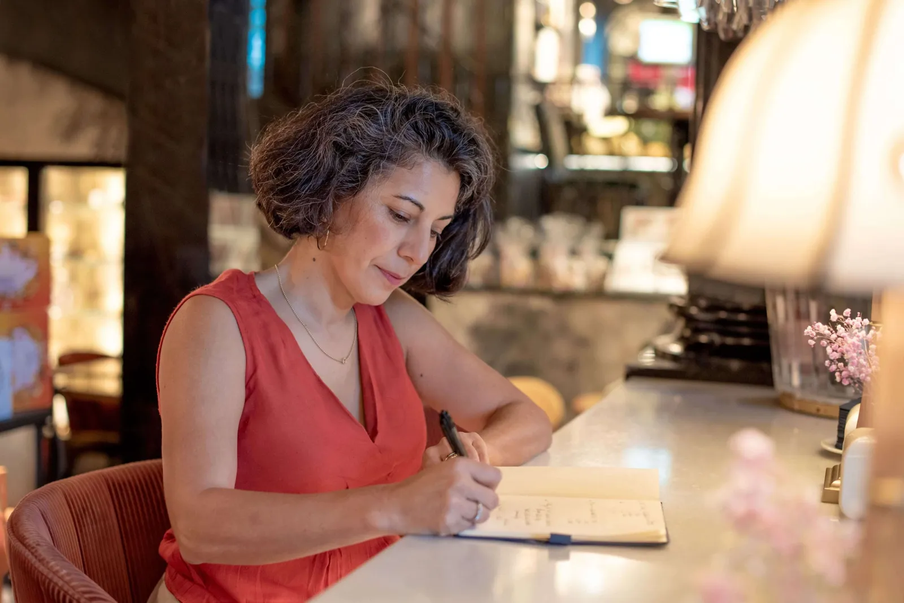

Journalist, B2B marketer and international consultant.
Journalist, B2B marketer and international consultant. Her profile is unusual, and that is what makes it useful: the ability to find stories (journalism), the ability to sell them (B2B marketing) and a sector she knows inside out (food and ingredients).
Led by Claudia Vasquez, Origenal Story combines 25+ years of international marketing, branding and B2B journalism experience in food, ingredients and sustainability. The result: 100+ strategic projects across 20+ countries.
She knows how trade fairs work from the inside.
Claudia has spoken and moderated at Food Innovate Summit, Nutrevent and EcoLiving Sweden, and collaborated with SIAL Paris. As an international freelance journalist she has covered SIAL Paris, Anuga, Alimentaria, Biofach, Natexpo France, Fruit Logistica, in-cosmetics Global and Hi&Fi. She doesn't just attend these events; she knows how they work from the inside.

Languages: English · Español · Français · Based in Barcelona, Spain
Let's talk.
Book a conversation with Claudia in English, Spanish or French.
Start a conversation